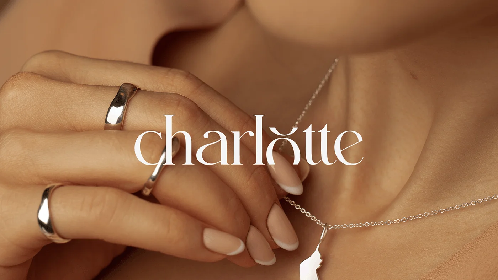
Project Overview
Charlotte nasceu da união entre sofisticação e atemporalidade, trazendo ao mercado um novo conceito em joias e semijoias de prata. Com um design elegante e identidade visual refinada, a marca foi cuidadosamente desenvolvida para refletir exclusividade, qualidade e modernidade.
Cada detalhe foi pensado para traduzir a essência da marca: uma curadoria impecável de peças, aliada a uma narrativa visual que transmite luxo acessível e autenticidade.
Charlotte não é apenas uma marca de joias; é uma expressão de estilo e personalidade.
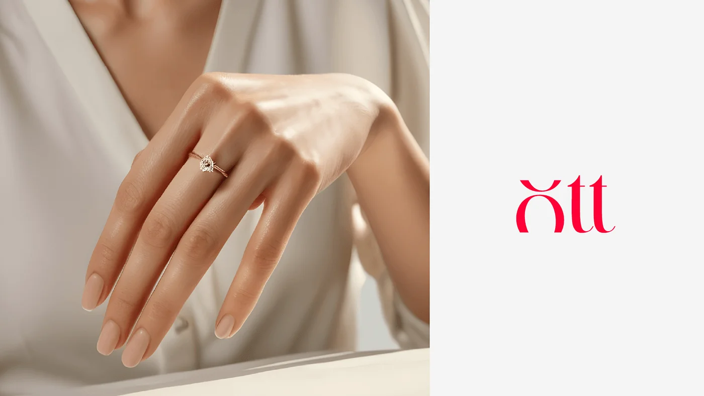
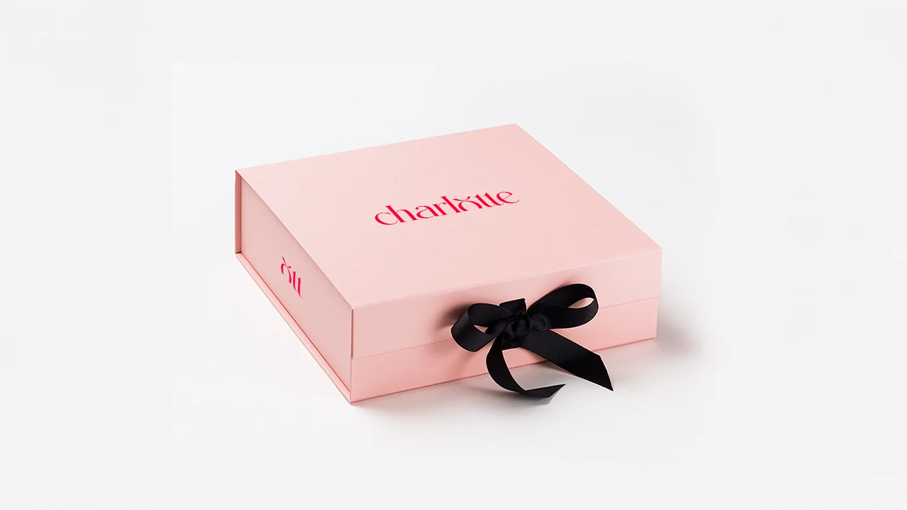
Project Approach
Charlotte não é apenas uma marca de joias e semijoias, mas uma expressão de estilo, personalidade e confiança. A ideia central é oferecer peças refinadas que complementam a identidade de quem as usa, trazendo um toque de luxo acessível e duradouro.
A Charlotte é elegante, confiante e moderna, mas sem ser distante. Ela conversa com seu público de maneira envolvente, transmitindo confiança e desejo, sem exageros. Seu tom de voz é refinado, mas acessível, criando uma conexão genuína com quem busca peças que marcam presença.
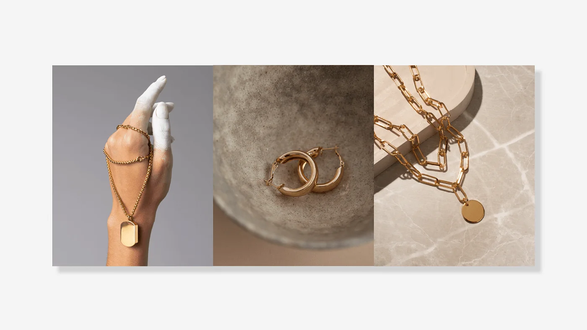
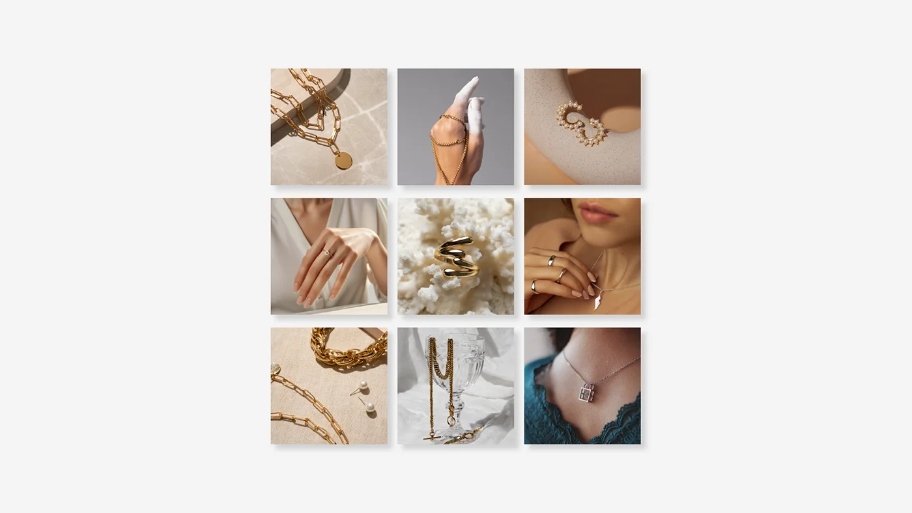
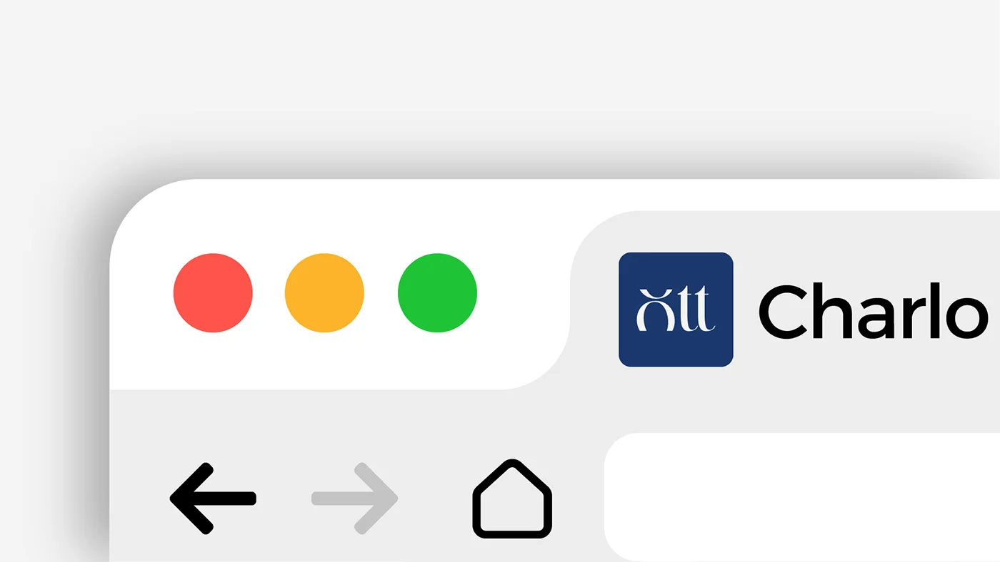
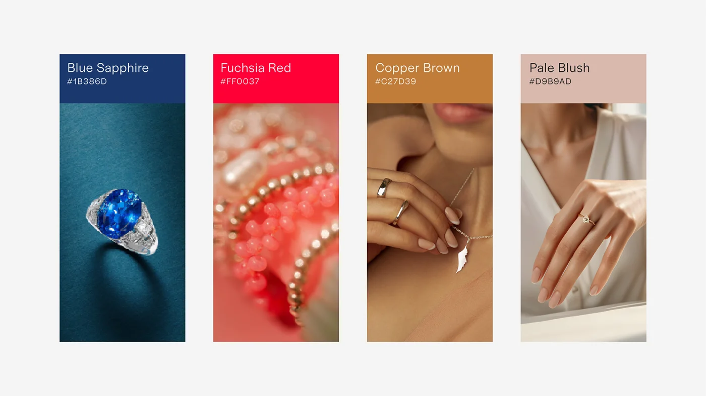
Brand Concept
Charlotte nasce da fusão entre sofisticação e ousadia, trazendo ao mercado joias e semijoias de prata que representam a essência da feminilidade forte e atemporal. A marca se posiciona como um símbolo de elegância autêntica, onde cada peça carrega uma história e um propósito: exaltar a beleza única de quem as usa.
Sua identidade visual foi cuidadosamente estruturada para refletir requinte, intensidade e calor emocional. A paleta de cores combina a profundidade e a nobreza do Blue Sapphire, transmitindo confiança e exclusividade; a energia vibrante do Fuchsia Red, que simboliza paixão e poder; a sofisticação do Copper Brown, evocando luxo e durabilidade; e a suavidade moderna do Pale Blush, equilibrando delicadeza e refinamento.
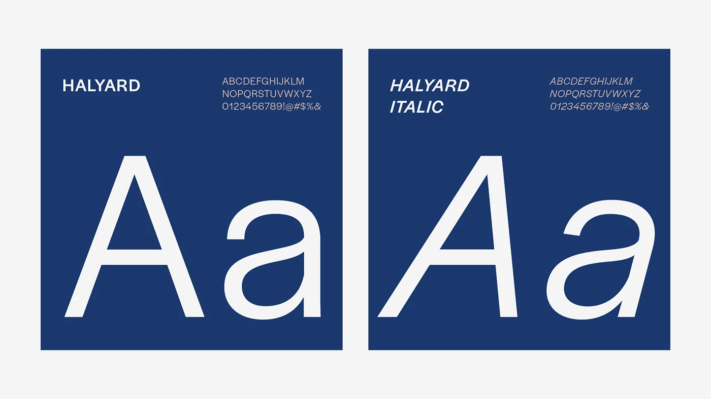
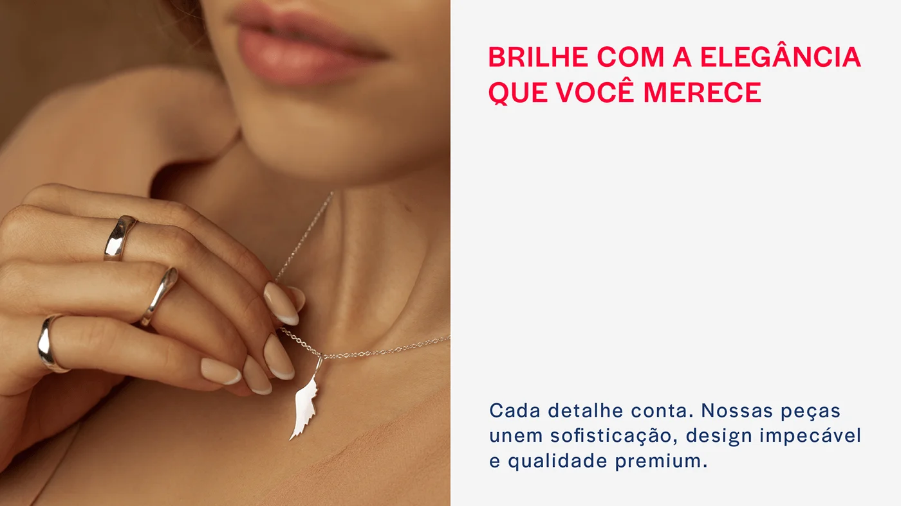
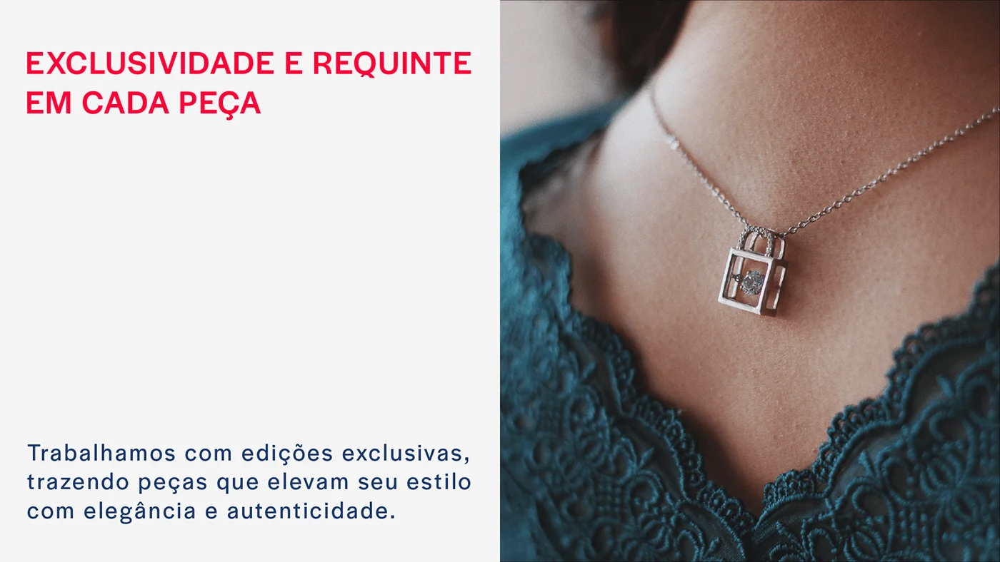
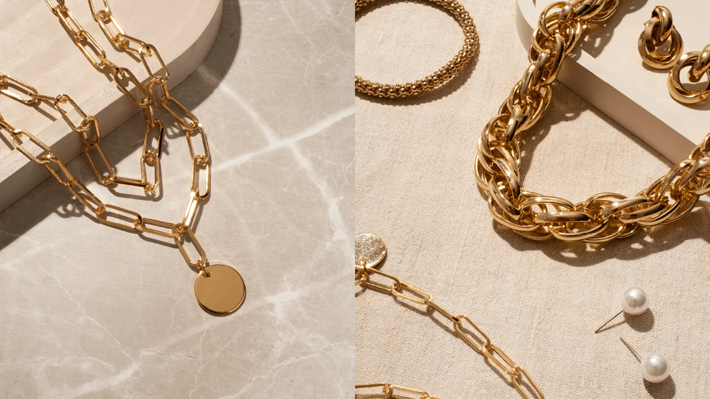
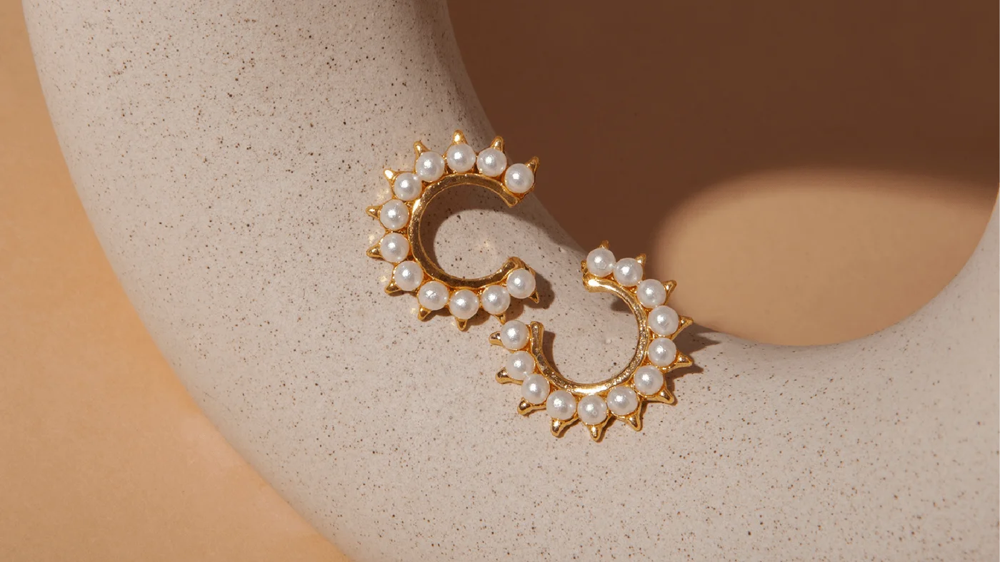